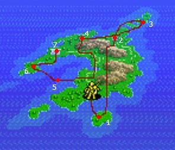
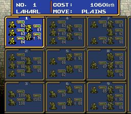

1. ภาพรวมเกม

Ogre Battle เป็นเกมวางแผน real-time แบบส่งยูนิตเดินยึดเมือง/ป้อมบนแผนที่ ยูนิตปะทะกันแล้วเข้าฉากต่อสู้อัตโนมัติ (เราคุมแค่การจัดทีม แถวหน้า/หลัง ยุทธวิธี และการ์ดทาโรต์)
เรื่องย่อ: จอมปราชญ์ Rashidi ลอบสังหารกษัตริย์ Gran Zenobia เพื่อนเก่าของตน แล้วร่วมมือกับจักรพรรดินี Endora แห่ง Highland ทำสงครามยึด 4 อาณาจักรภายในปีเดียว ก่อตั้งจักรวรรดิ Zetegenia ที่ปกครองด้วยความหวาดกลัว ปีจักรวรรดิที่ 24 อัศวินแห่ง Zenobia ที่เหลือรอดวางแผนต่อกรครั้งสุดท้ายที่ชายแดน Sharom
หัวใจของเกม: เราจะเป็น “ผู้ปลดปล่อย” แบบไหน — เป็นผู้นำที่เที่ยงธรรม หรือกดขี่ยิ่งกว่า Zetegenia การกระทำของเราส่งผลต่อ Reputation (มาตรวัดชื่อเสียง), ค่า Alignment/Charisma ของ Lord และตอนจบที่จะได้
2. สเตตัส & สูตร ALI/CHA
ตัวอย่างสถานะตัวละคร
ตัวอย่างแถบสเตตัส 6 ค่าต่อตัวละคร (จัดทำขึ้นประกอบบทสรุป ไม่ใช่ภาพจากเกม)
| สเตตัส | ผล |
|---|---|
| HP | พลังชีวิต ถึง 0 = สลบ · ยูนิต Undead เริ่มที่ 0 HP ต้องฆ่าด้วยเวทขาว/Pumpkin/Petrify |
| STR | พลังโจมตีอาวุธ + ช่วยกันกายภาพบางส่วน |
| AGI | ความเร็วในการออกอาวุธ + โอกาสหลบ |
| INT | พลังเวท |
| CHA (Charisma) | ใช้เลื่อนขั้นคลาสผู้นำ (ต้องการ 50–80) · เพิ่ม/ลดจากการกระทำเท่านั้น · ฆ่าศัตรูเลเวลสูงกว่า = เพิ่ม, ฆ่าเลเวลต่ำกว่า = ลด · หนีจากการต่อสู้ = −1 CHA ทั้งยูนิต |
| ALI (Alignment) | คุณธรรม ใช้เลื่อนขั้นคลาส (บางคลาสต้อง ALI ต่ำ บางคลาสต้องสูง) · เพิ่ม/ลดจากการกระทำเท่านั้น · ตัวที่ลงดาบสังหารต้องเป็นคนที่ ALI จะเปลี่ยน |
สูตร Alignment
เลเวลศัตรู − เลเวลตัวเรา + Class Bonus + ALI Bonus = ค่า ALI ที่เปลี่ยน
Class Bonus (บางส่วน): Paladin/Samurai Master/Titan/Muse/Monk/Princess/Silver/Gold/Platinum Dragon = −3 · Knight/Samurai/Cleric/Angel/Eagleman = −2 · Valkyrie/Mermaid/Pixie/Sylph = −1 · Ninja/Beast Master/Mage/Werewolf/Tigerman/Ravenman = +1 · Black Knight/Ninja Master/Sorceror/Fire Giant/Black Dragon/Tiamat = +2 · Phantom/Vampyre/Ghost/Demon/Devil/Lich/Skeleton/Zombie Dragon = +3
ALI Bonus (ประมาณจาก ALI ปัจจุบัน): 0–29 → −3 · 30–39 → −2 · 40–49 → −1 · 50–59 → 0 · 60–69 → +1 · 70–79 → +2 · 80–100 → +3
สูตร Charisma
ขึ้นกับส่วนต่างเลเวล (สูงสุด ±8 ต่อการสังหาร 1 ตัว):
ศัตรูสูงกว่า ≥2 lv → +8 · สูงกว่า 1 → +6 · เท่ากัน → +4 · ต่ำกว่า 1 → +2 · ต่ำกว่า 2 → 0 · ต่ำกว่า 3 → −2 · ต่ำกว่า 4 → −4 · ต่ำกว่า 5 → −6 · ต่ำกว่า 6 → −8
อยากได้ตอนจบดี: ให้ Lord เลเวลต่ำกว่าค่าเฉลี่ยศัตรูสัก 2–3 lv (ALI/CHA จะขึ้น) · การฆ่าด้วยการ์ดทาโรต์ EXP วิ่งเข้า Lord เสมอ
3. คลาส & การเลื่อนขั้น
ยูนิต 1 ทีม = ผู้นำ 1 + สมาชิกได้ถึง 4 (Small) หรือ 2 (Large) · จัดแถวหน้า/หลังเองได้ · เลื่อนขั้นทำที่แผนที่โลก (เมนู) เมื่อครบเงื่อนไข
ตัวอย่างการเลื่อนขั้น 1 สาย (จัดทำขึ้นประกอบบทสรุป ไม่ใช่ภาพจากเกม)
สายคลาส (Class Trees)
Fighter ─┬─ Samurai ──── Samurai Master
├─ Knight ──┬─ Paladin
│ └─ Vampyre
├─ Wizard ── Mage ── Sorcerer ── Lich ── Skeleton
├─ Beast Man ── Beast Master ── Dragoner ── Dragon Master
├─ Doll Mage ── Doll Master
├─ Wild Man ── Evil One ── Vampyre
├─ Ninja ──── Ninja Master
└─ Werewolf
Amazon ─┬─ Witch
├─ Valkyrie ── Muse
├─ Cleric ──── Shaman ── Monk
└─ Princess (Amazon + Royal Crown)
Faerie ── Pixie ── Sylph Mermaid ── Nixie
Dragon ─┬─ Black Dragon ── Tiamat ── Zombie D
├─ Red Dragon ──── Red Dragon II ── Salamand
└─ Silver Dragon ── Gold Dragon ── Platinum Dragon
Giant ─┬─ Fire Giant Gryphon ── Cockatris Hellhound ── Cerberus
├─ Ice Giant Wyrm ── Wyvern Octopus ── Kraken
└─ Titan
เงื่อนไขเลื่อนขั้น (คลาสสำคัญ)
| คลาส | เงื่อนไข | ผู้นำ? |
|---|---|---|
| Knight | Lv5, CHA 50+, ALI 50+ | ✔ |
| Samurai | Lv7, CHA 50+, ALI 50+ | ✔ |
| Paladin | Lv15, CHA 60, ALI 70+ (จาก Knight/Cleric) | ✔ |
| Samurai Master | Lv15, CHA 60, ALI 70+ | ✔ |
| Wizard | Lv4, CHA 50+, ALI 10–60 | ✔ |
| Mage | Lv10, CHA 60+, ALI 10–35 | ✔ |
| Sorcerer | Mage + Undead Staff | ✔ |
| Lich | Sorcerer + Undead Ring | ✔ |
| Beast Man | Lv5, CHA 50+, ALI 25–65 | ✔ |
| Beast Master | Lv12, CHA 60+, ALI 10–50 | ✔ |
| Dragoner | Beast Master + Stone of Dragos | ✔ |
| Dragon Master | Lv20, CHA 60+, ALI 40–60 | ✔ |
| Doll Mage / Doll Master | Lv5 ALI 35–70 / Lv14 CHA 60+ ALI 50–80 | ✔ |
| Wild Man | Lv6, CHA 50+, ALI 0–49 | ✔ |
| Evil One | Lv16, CHA 60+, ALI 0–30 | ✔ |
| Vampyre | Knight/Evil One + Blood Kiss (spell) | ✔ |
| Ninja / Ninja Master | Lv6 ALI 0–49 / Lv15 CHA 60+ ALI 0–30 | Ninja=✘ / Master=✔ |
| Cleric | Lv4, CHA 50+, ALI 50+ | ✔ |
| Shaman / Monk | Lv10 CHA 60+ ALI 60+ / Lv18 CHA 70+ ALI 70+ | ✔ |
| Valkyrie / Muse | Lv5 CHA 50+ ALI 35+ / Lv15 CHA 60+ ALI 70+ | ✔ |
| Witch | Lv5, CHA 50+, ALI 0–65 | ✔ |
| Princess | Amazon + Royal Crown | ✔ |
| Angel / Cherubim / Seraphim | Base / Lv11 CHA 60+ ALI 55+ / Lv22 CHA 70+ ALI 80+ | ✔ |
| Nixie | Lv11, CHA 50+, ALI 50+ (จาก Mermaid) | ✔ |
| Pixie / Sylph | Lv10 ALI 30–70 / Lv20 ALI 40–80 | ✘ |
| Eagle Man | Lv10, CHA 50+, ALI 45+ | ✔ |
| Raven Man | Lv12, CHA 50+, ALI 0–55 | ✔ |
| Fire / Ice Giant / Titan | Lv8 ALI 0–40 / Lv10 ALI 50–80 / Lv15 ALI 70+ | ✘ |
| Black Dragon → Tiamat → Zombie D | Lv7 ALI 0–35 / Lv15 ALI 0–35 / Tiamat + Undead Ring | ✘ |
| Red Dragon → Red Dragon II → Salamand | Lv7 / Lv16 / Lv23 · ALI 35–65 | ✘ |
| Silver → Gold → Platinum Dragon | Lv7 / Lv17 / Lv24 · ALI 65+ | ✘ |
| Cockatris / Wyvern / Kraken / Cerberus | Lv9 ALI 0–60 / Lv13 ALI 0–55 / Lv12 ALI 55+ / Lv13 ALI 0–60 | ✘ |
| Pumpkin → Halloween | ต้องมี Glass Pumpkin (จาก Deneb) หรือหาแบบ neutral · Halloween = Pumpkin + Pumpkin+ (Rotted) | ✘ |
ไอเทมเลื่อนขั้น: Undead Staff (Mage→Sorcerer), Undead Ring (Sorcerer→Lich / Tiamat→Zombie D), Stone of Dragos (Beast Man→Dragoner), Royal Crown (Amazon→Princess), Blood (Knight/Evil One→Vampyre), Glass Pumpkin (Witch เกณฑ์ Pumpkin), Pumpkin+ (Pumpkin→Halloween)
4. Opinion Leader (Lord / ตัวเอก)
Lord คือตัวเราเอง ถ้า Lord ถูกฆ่า = จบเกมทันที (ชุบไม่ได้) · ชุดโจมตีของ Lord และตัวละคร/ยูนิตที่ Warren พามาให้ ถูกกำหนดจากคำตอบ 22 ข้อ (การ์ดทาโรต์) ที่ Warren ถามตอนเริ่มเกม
| ชุด | โจมตี | ALI เริ่มต้น |
|---|---|---|
| #1 Icecloud Lord | แถวหน้า 2 Banish (ขาว) · แถวหลัง 1 Icecloud (เย็น, โดนทั้งทีม) | ~65 (สายบุญ) |
| #2 Iainuki Lord | แถวหน้า 3 Slash · แถวหลัง 1 Iainuki (แรงมาก) — มักถือว่าดีที่สุด | ~50–55 |
| #3 Thunder Lord | แถวหน้า 2 Slash · แถวหลัง 1 Thunder (สายฟ้า, โดนทั้งทีม) | ~40–45 |
| #4 Phantom Lord | แถวหน้า 2 Poison (ดำ) · แถวหลัง 1 Phantom (ดำ, โดนทั้งทีม) | ~40–45 |
อยากได้ชุด #2 (Iainuki): ตอบการ์ด Priestess=A, Emperor=A, Fortune=A, Temperance=A ที่เหลือส่วนใหญ่ B (ถ้าอยากล็อกชุดใดชุดหนึ่งเป๊ะ ให้เทียบตารางคำตอบเต็มจากคู่มือต้นฉบับ) · รีเซ็ตได้ถ้าทีมที่ Warren ให้ไม่ถูกใจ
5. ยุทธวิธีในสนามรบ (Attack Settings)
| ตั้งค่า | ผล |
|---|---|
| Strong | รุมตัวที่ HP มากสุดที่เอื้อมถึง · ดีสำหรับกดมังกร/ยูนิต HP เยอะ หรือทำทั้งทีมเลือดแดงไว้เก็บทีหลัง · ทั้งให้และรับดาเมจน้อยลง · Cleric/Shaman/Monk จะไม่ heal ใส่ Undead |
| Weak | รุมตัว HP น้อยสุด · เก็บตัวอ่อนออกให้เร็ว ลดจำนวนการโจมตีของศัตรู · ทั้งให้และรับดาเมจมากขึ้น · Cleric/Shaman/Monk heal ใส่ Undead เพื่อฆ่า |
| Leader | รุมผู้นำ · ใช้ตอนสู้บอส — ผู้นำล้ม = จบด่านทันที · กับยูนิตธรรมดา ผู้นำล้มแล้วทีมนั้นวิ่งกลับฐานหาผู้นำใหม่ |
| Best | โจมตีเป้าที่ทำดาเมจได้ดีที่สุด · ใช้เฉพาะบางกรณี (ทีม directed attacker เยอะ) |
เคล็ด: ฆ่าศัตรูด้วยการ์ด EXP วิ่งเข้า Lord · การ์ดเปลี่ยนสเตตัส/ยูนิต ได้ผลตาม INT ศัตรู, เวลากลางวัน/คืน และ INT ผู้นำเรา · จับธาตุที่ศัตรูอ่อนให้ตรงกับธาตุการ์ด
6. การ์ดทาโรต์ (Tarot Cards)
จั่วได้จากการปลดปล่อยเมือง/วิหาร หรือใช้ไอเทม Joker · การ์ดเปลี่ยนยูนิต (ยกเว้น Fool) ไม่มีผลกับผู้นำของยูนิตบอส
ตัวอย่างการ์ดทาโรต์ 4 ใบจาก 22 ใบในเกม (จัดทำขึ้นประกอบบทสรุป ไม่ใช่ภาพจากเกม)
| การ์ด | ผลในสนามรบ | โบนัสตอนปลดปล่อย |
|---|---|---|
| Chariot | เทพค้อนสงครามฟาดศัตรู 1 ครั้งแรงๆ | +2 STR |
| Death | ล้างศัตรูที่ HP เหลือ < ครึ่งออกจากสนามทันที | −2 Reputation |
| Devil | เวทดำแรงๆ โดนศัตรูทั้งหมด | −1 หรือ −2 Reputation |
| Emperor | ทุกคนในทีมได้โจมตีเพิ่มอีก 1 ครั้ง | +2 CHA |
| Empress | เติม HP ทั้งทีมเต็ม | +1 CHA |
| Fool | ศัตรูทั้งหมด (ยกเว้นผู้นำ) เขวออกจากการต่อสู้ 1 รอบ | +1 Luck |
| Fortune | ศัตรูถอยจากการต่อสู้ ไม่มีโทษทั้งสองฝ่าย | −3 ถึง +3 Reputation |
| Hanged Man | ลดป้องกันศัตรู | −1 STR |
| Hermit | Merlin ปล่อยสายฟ้าใส่ศัตรูทั้งหมด | +1 หรือ +2 INT |
| Hierophant | สะกดศัตรูให้หลับ | +2 ALI |
| Judgement | เวทขาวแรง ล้าง Undead + ดาเมจตัวอื่น | +2 HP |
| Justice | พายุน้ำแข็งถล่มศัตรู | +1 HP |
| Lovers | Cupid ทำศัตรูสับสน ตีกันเอง | +2 Reputation |
| Magician | กำแพงไฟเผาศัตรูทั้งหมด | +1 INT |
| Moon | สลับแถวหน้า/หลังของยูนิตถาวร | เปลี่ยนเวลาเป็นเที่ยงคืน |
| Priestess | ฟื้น HP ทีมละ 50 | +1 ALI |
| Star | เพิ่ม AGI ทีม (หลบง่ายขึ้น) | +1 AGI |
| Strength | เพิ่มป้องกันทีม | +1 STR |
| Sun | โดนทั้งสองฝ่าย ดาเมจตาม ALI (ALI ยิ่งต่ำยิ่งเจ็บ) + ล้าง Undead | เปลี่ยนเวลาเป็นเที่ยง |
| Temperance | ล้างสถานะเสีย (สตัน/หลับ) ของทีม | +2 Reputation |
| Tower | พื้นแตก (Low/High Sky ไม่โดน) | −2 ALI |
| World | กันเวทศัตรูทั้งหมด (บอสบางตัวยกเว้น) — สำคัญมากสู้บอสเวท | ทุกยูนิตในสนามได้โบนัสของการ์ดที่จั่วมาทั้งหมดของแผนที่นั้น |
7. สิ่งที่ต้องเข้าใจ
- Reputation (มาตรวัดชื่อเสียง): ปลดปล่อยเมือง/วิหารด้วยยูนิต ALI สูง = เพิ่ม, ปลดปล่อยด้วยยูนิต ALI ต่ำ (แข็งจนไม่เหลือ ALI) = ลด · การ์ด Death/Devil/Tower ตอนปลดปล่อยก็ลด · ยูนิตแข็งมากไม่เสีย Reputation ตราบใดที่ไม่ปลดปล่อยเมืองเอง
- ปลดปล่อยเมืองที่มองไม่เห็น/ซ่อน ด้วยยูนิต ALI ต่ำ ไม่เสีย Reputation (เว้นแต่การ์ดที่จั่วออกมา)
- Roshiafallen Temple: วิหารพิเศษกระจายทุกแผนที่ · หลายที่ต้องพก Tablet of Yaru ไปเพื่อรับ Zodiac Stone (12 เม็ด) · บางที่มีไอเทม/ตัวละครพิเศษ
- Chaos Gate: ประตูซ่อนที่พาไปแผนที่เสริม (Muspelm, Organa, Shiguld ฯลฯ) — เดินยูนิตผ่านจุดที่ระบุเพื่อเปิด · ไม่ต้องสวม Brunhild Sword แค่มีในคลัง
- Neutral Character: แต่ละแผนที่มียูนิตเป็นกลางถึง 3 แบบ ซ่อนตามภูมิประเทศ (ที่ราบ/ภูเขา/ป่า) · เดินยูนิตผ่านแล้วเจอ → ในเมนูรบเลือก Befriend เพื่อชวนเข้าทีมสำรอง (พลาดได้ถ้าเลเวลต่ำเกิน/CHA ผู้นำต่ำ)
- Undead: HP เริ่ม 0 ต้องฆ่าด้วยเวทขาว, Pumpkin, หรือ Petrify · การ์ด Judgement/Sun ก็ล้างได้
- พื้นที่ว่างในกองทัพ: ตัวละครพิเศษไม่เข้าร่วมถ้ากองทัพเต็ม (สูงสุด 100 ตัว / 25 ยูนิต) — ต้องเผื่อที่ให้เขาและยูนิตของเขาเสมอ
- เงื่อนไข Dragoon 3 คน (Slust/Fenril/Fogel): ต้องมี Herostar + Reputation ≥ 3/5 + Lord ALI 70+ ตอนชนะ ไม่งั้นเขาให้แค่ดาบแล้วอยู่ปราสาทต่อ
8. เดินเรื่องทุกด่าน
ลำดับตามคู่มือเกม · 10 ด่านแรกสลับลำดับกันได้ตามใจ · Kalbian Peninsula ควรทิ้งไว้จนได้ Debonair (ผ่าน Shangrila ก่อน) · Muspelm / Organa / Shiguld เข้าผ่าน Chaos Gate
| ด่าน | Shop Town | บอส (เลเวล) | สิ่งที่ต้องทำ / ของสำคัญ |
|---|---|---|---|
| 1. Castle of Warren | — | Warren [Wizard] Lv4 (สู้เดี่ยว) | ปลดปล่อยเมืองซ่อน Zeltenia (เกาะ NE) → Lans · สู้ Warren ใกล้เที่ยง → Warren + 6 ยูนิตเข้าร่วม |
| 2. Sharom | Valna | Usar [Wild Man] Lv5 + 2 Wizard Lv4 | วิหารซ่อนเหนือฐาน → Herostar · ให้ Lans สู้ Usar (เนื้อเรื่อง) |
| 3. Sharom District | Latingurue | Gilbert [Beast Man] Lv6 + 2 Wyrm Lv4 | ได้ Canopus (Bah'Wahl → Yulia ที่วิหารซ่อน W ของฐานศัตรู → Wings of Victory → กลับ Bah'Wahl) · Canopus สู้ Gilbert แล้วอภัย → Gilbert เข้าร่วม (Rep ≥1/2) |
| 4. Pogrom Forest | Lolaima | Kapella [Wizard] Lv8 + 3 Imp Lv7 | รับ Silver จาก Boltorano ที่ Para · กลับมาพร้อม Doun Gem → Orb · Mystic Mace ที่นี่ · ฆ่า Ghost/Skeleton เพื่อดัน ALI Lord เป็น 100 |
| 5. Lake Jannenia | G'Jiandep | Sirius [Werewolf] Lv7 + 4 Amazon Lv6 | กลางวัน = ร่าง Beast Man (ง่าย), กลางคืน = Werewolf (3 โจมตี, ถ้าฟาด Fighter ตายอาจติด Virus → กลายเป็น Werewolf) · วิหาร SE + Tablet → Opal · Rune Axe |
| 6. Deneb's Garden | G'Jiandep | Deneb [Witch] Lv10 + 4 Pumpkin Lv8 | อภัย Deneb (เสีย Rep, +ALI Lord) แล้วเอา Golden Bough มาให้ → Glass Pumpkin, อาจเข้าร่วม (Rep <40%) · ไม่อภัย: เมือง Baljib แจก Pumpkin+ (Rotted) |
| 7. Slums of Zenobia | Fillia | Debonair [General] Lv11 + 2 Red Dragon Lv9 | ปลดปล่อย By'Riot → Ashe · จ้าง Lyon ที่ Anberg (20k ในด่าน / 5k ทีหลัง) · Ashe สู้ Debonair · Kal Robst → Key (Tristan ยังไม่ตาย) · วิหารบนทางไป Zenobia + Tablet → Garnet |
| 8. Island Avalon | Gontak | Gares [Prince] Lv12 + 2 Black Dragon Lv10 (เปิดด้วย Evil Dead ~60 ทั้งทีม) | วิหารซ่อนกลางแผนที่ → Aisha · Aisha สู้ Gares · วิหารเดิม + Tablet → Emerald · เปิด World Card ก่อนสู้ |
| 9. Kastolatian Sea | Ma'Aksaz | Porkyus [Nixie] Lv13 + 4 Mermaid Lv11 | วิหารซ่อนมุม NW → Brunhild Sword (1 ใน 3 Mystic Treasures) · มีเมืองซ่อน 8 แห่ง (ถ้าเก็บ 18 ตัวพิเศษ อย่าเพิ่งปลดปล่อยเมือง/วิหารที่เห็น เก็บไว้ดัน Rep ทีหลัง) |
| 10. Diaspola | Raloshel | Norn [Shaman] Lv12 + 2 Titan Lv11 | ปลดปล่อย Somyul (เจอ Posha) · วิหารใกล้ Pelegue → ยา → Posha → Demon · ปฏิเสธฆ่า Norn (Rep 55% หญิง / 60% ชาย) → Lord ชวน Norn เข้าร่วม (+2 Titan) · ซื้อ Golden Bough ให้ Deneb · Ajan + Tablet → Aqua · Ginger Cake → Posha → Peal |
| 11. Kalbian Peninsula (หลังได้ Debonair) | Olesun | Figaro [General] Lv15 + 2 Black Dragon Lv12 | Chaos Gate เหนือฐาน · Debonair สู้ Figaro · Durandal Sword |
| 12. Valley of Kastro | Geral Abad | Ares [Raven Man] Lv16 + 4 Ninja | Chaos Gate ใต้ Fuluhnze · วิหาร SW ของ Geral Abad → Rauny (Rep ≥65%) · Rauny สู้ Ares |
| 13. Balmorian Ruins | Shik'Anhy | Albeleo [Doll Master] Lv17 + Rock Golem Lv15 + Black Dragon Lv14 | ปลดปล่อย Wan Kayo → เมืองซ่อน Kalayo → Bell of Light (ต้องมี Herostar + Rep ≥50%) · วิหาร W ของ Kannyate ใช้ Bell → Saradin · Saradin สู้ Albeleo · Chaos Gate SE ของ Wan Kayo · Fahfniel Sword ไม่มี... (สายอื่น) |
| Alpha. Muspelm (Chaos Gate) | Insala | Slust [Dragoon] Lv17 + 2 Gold Dragon Lv15 | ชนะ → Slust เข้าร่วม (Herostar + Rep ≥3/5 + Lord ALI 70+) มิฉะนั้นได้ Zanzibar Sword · วิหาร SE + Tablet → Peridot · Chaos Gate เกาะ SE · Royal Crown |
| Beta. Organa (Chaos Gate) | Ohbia | Fenril [Dragoon] Lv17 + Iron Golem Lv13 | ชนะ → Fenril เข้าร่วม (เงื่อนไขเดียวกับ Slust) · วิหารเกาะเล็ก (ยูนิตบิน) + Tablet → Ginger Cake (พระลืม Pearl) → เอาไป Posha · Chaos Gate เหนือ Baldella |
| 14. City of Malano | Felana | Baron Apros [Dandy] Lv18 + 2 Demon Lv16 | พา Lord ไป Bel Chelry → Tristan (Rep ≥65% หรือมี Key · กองทัพ ≤95 ตัว · Lord ต้องเป็นคนคุย) · Rauny/Tristan สู้ Apros · Selbelnar + Tablet → Ruby · buried items 10 ชิ้น |
| 15. The Tundra | Nansen | Mizal [Seraphim] Lv19 + 2 Ice Giant Lv17 (เปิดด้วย Jihad ขาวโดนทั้งทีม) | Yushis สู้ Mizal · วิหาร E ของ Valhalla + Tablet → Turquoise · Snow Cape, Flame Sword |
| 16. Antalia | Banbuhl | Omicron [Sorceror] Lv20 + 4 Evil One | เปิด World Card · วิหารซ่อนปลายแม่น้ำในภูเขาตะวันออก → Yushis (Rep ≥65%) · Undead Staff ที่ร้าน · ฆ่า Ghost/Skeleton ในหนองดัน ALI Lord เป็น 100 |
| 17. Antanjyl | Inohngo | Galf [Devil] Lv18 + 4 Phantom | Galf เข้าร่วมถ้า Rep ≤2/5, Lord ALI <31, มี Brunhild Sword ในคลัง (ไม่สวม) · เมืองซ่อน 8 / วิหาร 4 · Crystal ขาย (เผยตำแหน่งซ่อน) · Undead Ring/Staff, Blood spell |
| 18. Shangrila | Shellmat | Gares [Prince] Lv21 + 2 Red Dragon II Lv18 | Rauny/Tristan สู้ Gares · รับ Debonair เข้าร่วม (ต้องมี Norn) · เยี่ยม Shangrila → รู้เรื่อง 3 Mystic Treasures · เอา Orb + True Gem + Doun Gem มา → Tablet of Yaru · วิหาร + Tablet → Sapphire |
| 19. Fort Allamoot | El Rosario | Castor + Deuces [Gemini] Lv22 (Gemini Attack ฆ่ามังกรตีเดียว, อ่อนไฟ) | Chaos Gate SW ของ Allamoot (ข้างกำแพงเล็ก) → ไป Shiguld · เริ่มเกมค้าขาย "The Saga" (ไอเทมมูลค่าสูงเพียบ) |
| Gamma. Shiguld (Chaos Gate) | Kalishinpi | Fogel [Dragoon] Lv21 + Tiamat Lv20 | ชนะ → Fogel เข้าร่วม (เงื่อนไขเดียวกับ Slust) มิฉะนั้นได้ Zepyulos Sword · วิหาร NE ของ Alshabi + Tablet → Diamond · Fahfniel Sword · ร้านมี Ali Pot./Undead Ring/Dowser |
| 20. Dalmuhd Desert | Hilzabar | Prochon [Ninja Master] Lv23 + 4 Ninja (Ninjutsu โดนทั้งทีม ~80) | หลังด่านเอา Silver ไปให้ Boltorano → Doun Gem · วิหาร + Tablet → Amethyst |
| 21. The Rhyan Sea | Gafelt | Cardinal Randals [Dandy] Lv22 + 4 Evil One (World Card จำเป็น) | ไป Ramoto พร้อม Orb + Doun Gem → True Gem จาก Tarut · วิหาร SE ของฐาน + Tablet → Topaz |
| 22. Fort Shulmana | Ochiwalong | General Previa [General, Deva] Lv25 + 2 Devil + 2 Raven Man (Blade→Slice→Phantom) | รับ Mystic Armband จาก Tristan (1 ใน 3 Mystic Treasures) · Notos Sword · Folio → Fullmoon |
| 23. Shrine of Kulyn | San Martin | General Luvalon [Deva ที่แข็งที่สุด] Lv26 + 4 Samurai Lv22 (2 Blade + 1 Blast) | เยี่ยม Curen อีกครั้ง → Grail (1 ใน 3 Mystic Treasures — ขึ้นกับ Reputation สูง ไม่ใช่การชนะรอบเดียว) · Bizen Sword, Boleas |
| 24. City of Xanadu | Pillashcapia | Overlord Hikash Lv27 + 4 Muse (Wind Shot ทะลุ World Card) | Rauny สู้ Hikash · buried items 10 ชิ้น |
| 25. Zetegenia | Haljaya | Empress Endora [Black Queen] Lv21 + 2 Evil One Lv24 (5 เวทโดนทั้งทีม — ต้องมี World Card) | Endora จะชวนยูนิตที่บุกให้เข้าฝ่ายเธอ — ตอบ NO (ตอบ yes = เสียยูนิตนั้นถาวร) · Lord หรือ Debonair สู้ Endora |
| 26. Temple Shalina (ด่านสุดท้าย) | Elsmiya | 3 ยก: Gares Lv26 + 4 Wraith → Rashidi [Wiseman] Lv29 + 2 Evil One Lv27 (6 เวทโดนทั้งทีม) → Diablo (God of Destruction) 3 ส่วน | Aisha/Debonair สู้ Gares · Lord/Tristan/Yushis/Saradin สู้ Rashidi · Diablo: ฆ่าหัวซ้าย (เย็น+Petrify) และหัวขวา (ไฟ+Earthquake) ก่อนถึงจะตีลำตัวได้ · World Card ใช้ไม่ได้กับ Diablo · ใช้ Justice/Magician กดหัว, Judgement เป็นหลัก, Empress คอยฮีล · ชนะ = จบเกม |
| Dragon's Haven (ตั้งชื่อ Lord ว่า "Fireseal") | Bright Rock | Albeleo [Doll Master] Lv17 + 4 Evil One Lv15 | แผนที่เสริมจากโค้ด · Lord เริ่มพร้อมตัวละครคลาสสูงสุด · World Card จำเป็น (Albeleo 80 ดาเมจทั้งทีม 2 ครั้ง) · ตอนจบการ์ด Fortune |
9. ตัวละครพิเศษ 18 ตัว
| ชื่อ (คลาส) | แผนที่ | เงื่อนไข |
|---|---|---|
| Lans Hamilton (Knight) | 1 Castle of Warren | ปลดปล่อยเมืองซ่อน Zeltenia (บังคับอยู่แล้ว) |
| Warren Moon (Wizard) | 1 Castle of Warren | เอาชนะเป็นบอส (อัตโนมัติ) พา 6 ยูนิตมาด้วย |
| Canopus Walf (Eagle Man) | 3 Sharom District | Latingur → Bah'Wahl → Latingur → Yulia ที่วิหารซ่อน W → Wings of Victory → กลับ Bah'Wahl |
| Gilbert Oblion (Beast Man) | 3 Sharom District | มี Canopus (ลงสนาม) + Rep ≥1/2 · ให้ Canopus สู้เขา แล้วฟังเรื่องของเขา |
| Lyon (Beast Man) | 7 Slums of Zenobia | จ้างที่ Anberg 20,000 Goth (ในด่าน) หรือ 5,000 (ทีหลัง) · ไม่จำเป็นต่อตอนจบ |
| Ashe (Knight) | 7 Slums of Zenobia | ปลดปล่อย By'Riot (เมืองมีกำแพง) |
| Aisha (Shaman) | 8 Island Avalon | เจอในวิหารซ่อนกลางแผนที่ |
| Norn (Shaman) | 10 Diaspola | เป็นบอส · ตอบ “ไม่” ตอนถามจะฆ่าเธอไหม (Rep 55% หญิง / 60% ชาย) → Lord ชวนเข้าร่วม (+2 Titan) |
| Deneb (Witch) | 6 Deneb's Garden | อภัยเธอ (เสีย Rep) → เอา Golden Bough มาให้ → เธอเสนอเข้าร่วมถ้า Rep <40% · ไม่จำเป็นต่อตอนจบ |
| Rauny Viskalf (Muse) | 12 Valley of Kastro | ปลดปล่อยวิหาร SW ของ Geral Abad + Rep ≥65% |
| Slust the Red (Dragoon) | Alpha Muspelm | ชนะ + Herostar + Rep ≥3/5 + Lord ALI 70+ (ไม่งั้นได้ Zanzibar Sword) |
| Fenril of Ice (Dragoon) | Beta Organa | ชนะ + Herostar + Rep ≥3/5 + Lord ALI 70+ |
| Tristan Zenobia (General) | 14 City of Malano | Bel Chelry · Rep ≥65% (หรือมี Key) · กองทัพ ≤95 · Lord ต้องเป็นคนคุย · เก่งทั้งโจมตีและ recruit |
| Kaus Debonair (General) | 18 Shangrila | ต้องมี Norn ในทีมชวนเขา (ไม่งั้นได้ Sonic Blade) |
| Saradin (Mage) | 13 Balmorian Ruins | ใช้ Bell of Light กับรูปปั้นที่วิหาร W ของ Kannyate (จอมเวทแรงที่สุดในเกม) |
| Yushis (Cherubim) | 16 Antalia | ปลดปล่อยวิหารซ่อนปลายแม่น้ำในภูเขาตะวันออก + Rep ≥65% |
| Fogel the Dragon Rider (Dragoon) | Gamma Shiguld | ชนะ + Herostar + Rep ≥3/5 + Lord ALI 70+ (ไม่งั้นได้ Zepyulos Sword) |
| Galf (Devil) | 17 Antanjyl | ชนะ + เสนอ Brunhild Sword · Rep ≤2/5 · Lord ALI <31 · เลือกทางชั่ว ไม่เข้าตอนจบ “ดีที่สุด” |
การให้ตัวละครพิเศษสู้บอส “ของตัวเอง” เป็นแค่เพื่อเนื้อเรื่อง ไม่บังคับ · เก็บครบ 18 ตัวต้องสลับ ALI Lord ขึ้น-ลง และ Rep ขึ้น-ลง หลายรอบ (ดูลำดับในหัวข้อ 8)
10. ยูนิตแนะนำ

- “Vanilla” (ใช้ได้ทั้งเกม): Muse × 2 (หลัง) + Paladin × 2 (หน้า) + Monk — ดาเมจปานกลาง ฮีลตัวเองได้
- ยูนิต Lord สายดี: Lord + Paladin × 2 + Muse + Monk — 6 โจมตีหน้า + 2 โดนทั้งทีม + ฮีล · ปลดปล่อยเมืองได้ดี (ดัน Rep)
- ยูนิตน้ำ: Nixie × 3 (หลัง) + Kraken (หน้า) — 3 เวทโดนทั้งทีม + 4 โจมตีเดี่ยว โดยเฉพาะบนน้ำ
- ยูนิต Vampyre: Vampyre + Werewolf × 4 — กลางคืน 14 โจมตี, กลางวันโลงศพ Vampyre ทนมาก
- ยูนิต Mop-Up (เก็บตัวเลือด): Wizard × 3 (หลัง, 6 Magic) + Gryphon/Wyrm (หน้า, บินเร็ว) — ไล่เก็บยูนิตที่หนี
- ยูนิต Lich: Lich + Phantom × 2 + Wraith × 2 — จบใน 1 รอบ ราคาถูก จุดอ่อนน้อย (ใช้ Phantom ล้วน = เคลื่อนที่แบบ Low Sky เร็วขึ้น)
- ยูนิต Sapper (กวนศัตรู): Witch + Cocatris + Pumpkin/Halloween × 2 — สตันทั้งทีม, Petrify, กด HP + ฆ่า Undead
- ยูนิต Dragon Master: Dragon Master + Dragon ท้ายสาย × 2 (หลัง โดนทั้งทีม) + Zombie D (หน้า ทน) — แรงมากแต่สร้างยาก
11. อาวุธ & เกราะ
อาวุธ/เกราะส่วนใหญ่ได้จากศัตรู/ยูนิตเป็นกลางที่ถูกล้างทั้งยูนิต หรือซื้อจากร้าน · ด้านล่างคือชิ้นที่มี “จุดหาแน่นอน”
| ชื่อ | ค่า | ธาตุ | หาได้ที่ |
|---|---|---|---|
| Mystic Mace | INT +7, STR +2 | ขาว | Pogrom Forest |
| Rune Axe | STR +15 | ขาว | Lake Jannenia |
| Brunhild Sword (Mystic Treasure) | STR +20 | ขาว | Kastolatian Sea (วิหาร NW) |
| Durandal Sword | STR +12 | ดำ | Kalbian Peninsula |
| Sonic Blade | STR +13 | กายภาพ | Shangrila (หรือจาก Debonair) |
| Zanzibar Sword | STR +18 | ขาว | Muspelm (จาก Slust) |
| Zepyulos Sword | STR +15, INT +3 | ดำ | Shiguld (จาก Fogel) |
| Fahfniel Sword | STR +20, INT +4 | ดำ | Shiguld |
| Flame Sword | STR +6 | ไฟ | Tundra |
| Snow Cape (เกราะ) | Cold +16, Phys +11 | เย็น | Tundra |
| Notos Sword | STR +15, INT +3 | สายฟ้า | Fort Shulmana |
| Bizen Sword | STR +11 | ดำ | Shrine of Kulyn (ดาบ Luvalon) |
| Boleas | STR +17 | ไฟ | Shrine of Kulyn |
อาวุธลม 4 ทิศ (Eskendale/Euros/Notos/Zepyulos) + ต้องมี → รวมเป็น FireSeal ที่ Shiguld (ขาย 655,350 Goth หรือใช้ตั้งชื่อ Lord เพื่อไป Dragon's Haven)
12. ไอเทม & Zodiac Stones
ไอเทมที่ควรรู้
| ไอเทม | ผล |
|---|---|
| Joker | จั่วการ์ดทาโรต์สุ่ม 1 ใบเข้าคลัง (2,000 Goth) — ฟาร์มการ์ดก่อนสู้บอส |
| Charm | ใช้กับยูนิตศัตรู → ทุกคนยกเว้นผู้นำเข้าร่วมกองเรา (50,000 Goth, แพง) |
| Chime | เรียกตัวละครเป็นกลางบนแผนที่มาสู้ |
| Crystal | เผยตำแหน่งเมือง/วิหารซ่อน (36,000 Goth) |
| Dowser | ใช้หา Buried Item บนแผนที่ (25,000 Goth) |
| Termites | ทลายกำแพงบนแผนที่ (Map 7, 14) |
| Merchant | เรียก “Anywhere Jack” ร้านขายไอเทมเพิ่มสเตตัส (STR/INT/AGI/LUK/HP/CHA Pot.) |
| Undead Staff / Undead Ring / Stone of Dragos / Royal Crown / Blood | ไอเทมเลื่อนขั้นคลาส (ดูหัวข้อ 3) |
| Boots / Bell / Summons / Moonbeam / Sunshine | ฝากยูนิตในเมือง / ส่งยูนิตกลับฐาน / เรียกทุกยูนิตมาหา Lord / เปลี่ยนเป็นเที่ยงคืน / เปลี่ยนเป็นเที่ยง |
3 Mystic Treasures (จำเป็นต่อตอนจบสูง)
Brunhild Sword (Kastolatian Sea) · Mystic Armband (Fort Shulmana จาก Tristan) · Grail (Shrine of Kulyn / Curen — ต้อง Rep สูง)
12 Zodiac Stones (ต้องมี Tablet of Yaru ก่อน)
| หิน | ที่ |
|---|---|
| Amethyst | วิหารเดี่ยวใน Dalmuhd Desert |
| Aqua | Ajan ใน Diaspola (ภูเขาสูง NW ของฐาน) |
| Diamond | วิหาร NE ของ Dallu Sarram ใน Shiguld |
| Emerald | วิหารกลางภูเขา Avalon (ที่เจอ Aisha) |
| Garnet | วิหารบนทางไป Zenobia ใน Slums of Zenobia |
| Opal | วิหาร SE ของทะเลสาบ Lake Jannenia |
| Peal | เอา Ginger Cake จากวิหารซ่อนใน Organa ไปให้ Posha ที่ Somyul |
| Peridot | วิหารซ่อน E ของ Fidelin บน Muspelm |
| Ruby | เมือง Sanbelna ใน City of Malano |
| Sapphire | วิหารเดี่ยวใน Shangrila |
| Topaz | วิหาร SE ของฐานใน Rhyan Sea |
| Turquoise | วิหาร E ของ Valhalla บน Tundra |
อีก 2 เม็ด (Peal จาก Diaspola/Organa, และเม็ดที่ 12 ต่างแหล่ง) — รวมทั้งหมด 12 เม็ดสำหรับตอนจบ World · อย่านำ Zodiac Stone ไปแลก Crown
13. ตอนจบ (Endings)
ตอนจบขึ้นกับ Reputation, เพศ Lord, CHA/ALI ของ Lord และตัวละคร/สมบัติที่เก็บได้ · แต่ละแบบ Lord จะได้การ์ดทาโรต์ต่างกัน
| การ์ด | เงื่อนไข |
|---|---|
| World (ดีที่สุด) | Rep เกือบเต็ม + เก็บ 12 Zodiac Stones (ไม่แลก Crown) + เก็บตัวละครพิเศษครบ (ยกเว้น Galf; Lyon/Deneb ไม่บังคับ — จริงๆ ต้องมีแค่ Rauny + Tristan) + มี 3 Mystic Treasures |
| Emperor (ชาย) / Empress (หญิง) | Rep เกือบเต็ม + มี 3 Mystic Treasures |
| Hierophant (ชาย) / Priestess (หญิง) | Rep เกือบเต็ม + มี Rauny (ชาย) / Tristan (หญิง) |
| Sun (ชาย) / Moon (หญิง) | Rep เกือบเต็ม |
| Chariot | Rep ระหว่างครึ่ง–สามในสี่ + มี Tristan |
| Hanged Man | Rep ระหว่างครึ่ง–สามในสี่ |
| Death | Rep ระหว่างศูนย์–หนึ่งในสี่ + Lord CHA 30–60 |
| Tower | Rep ระหว่างศูนย์–หนึ่งในสี่ + Lord CHA 0–30 |
| Devil | Rep ระหว่างศูนย์–หนึ่งในสี่ + มี Galf |
| Fortune | จบด่าน Dragon's Haven (เพศใดก็ได้) |
14. โค้ด & คำถามที่พบบ่อย
โค้ด (ตั้งเป็นชื่อ Lord)
- Fireseal — ตอบคำถาม Warren ตามปกติ แต่แผนที่แรกจะเป็น Dragon's Haven แทน Castle of Warren · Lord เริ่มพร้อมตัวละครคลาสสูงสุด
- Music/On — เข้าโหมดฟังเพลงในเกม
FAQ
Q: ทำครบเงื่อนไขแล้วตัวละครพิเศษยังไม่เข้าร่วม?
A: 99% เพราะกองทัพเต็ม — ต้องเผื่อที่ให้เขา + ยูนิตของเขา (สูงสุด 100 ตัว / 25 ยูนิต) ลบยูนิตที่ไม่ใช้ทิ้ง
Q: สู้ด้วยยูนิตแข็งเกินไป Reputation จะตกไหม?
A: ไม่ตกโดยตรง — จะตกก็ต่อเมื่อยูนิตที่แข็งจน ALI หมดไปปลดปล่อยเมือง · มียูนิตโครตแข็งได้โดยไม่เสีย Rep ถ้ามันไม่แตะการปลดปล่อย
Q: ALI Lord ตกจนดันขึ้นไม่ได้?
A: สู้ยูนิตเลเวลสูงกว่า, ฆ่ายูนิต ALI ต่ำ (Undead / สาย Wizard) · แต่พอ ALI ถึงสุดขั้ว (0–10 หรือ 90–100) จะขยับยาก · ตัวที่ ALI จะเปลี่ยนต้องเป็นคนลงดาบสังหาร
Q: Brunhild Sword ต้องสวมไว้เพื่อหา Chaos Gate ไหม?
A: ไม่ต้อง — แค่มีในคลังก็หา Chaos Gate ได้ทุกแผนที่
Q: Virus มีจริงไหม?
A: มี แต่ไม่ใช่ไอเทม — บอส Lake Jannenia (Sirius ร่าง Werewolf กลางคืน) ถ้าฟาด Fighter ตาย มีโอกาส 12.5% ที่ Fighter จะกลายเป็น Werewolf
Q: มี Fireseal แล้วไป Dragon's Haven ยังไง?
A: ทางเดียวคือตั้งชื่อ Lord ว่า "Fireseal" ตอนเริ่มเกมใหม่ · ตัวไอเทม Fireseal มีไว้ใบ้และขายเอาเงินเท่านั้น
Q: รู้ธาตุการโจมตีจากอะไร?
A: สีที่ตัวละครกะพริบตอนโดน — ไฟ=แดง, เย็น=น้ำเงิน, สายฟ้า=ม่วง, ดำ=ดำ, ขาว=เขียว, กายภาพ=ไม่มีสี
Q: ตัดสินผู้ชนะการต่อสู้ยังไง?
A: ฝ่ายที่ทำดาเมจรวมมากกว่าชนะ · ดาเมจจากการ์ดไม่นับ · ฆ่าศัตรูตายไม่การันตีชนะ (นับดาเมจแค่เท่า HP ที่เหลือของมัน)